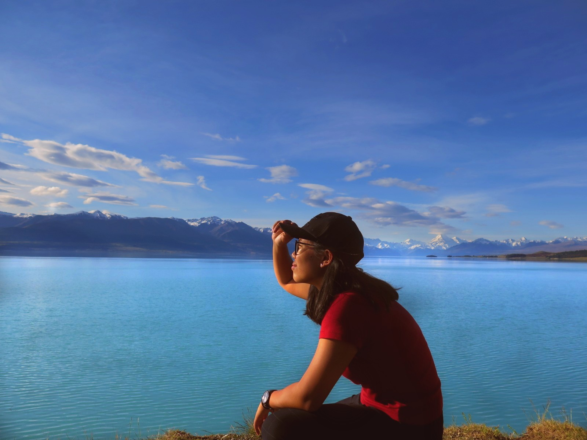
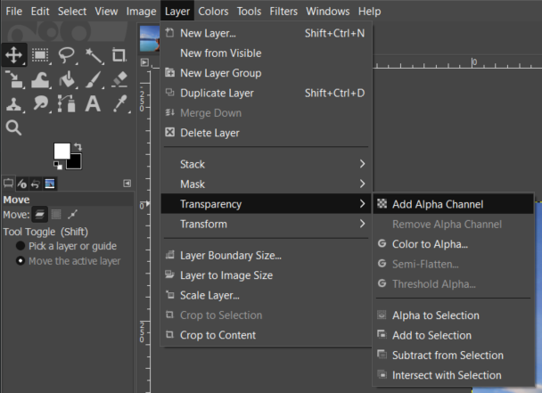
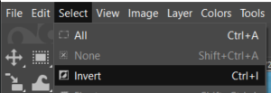
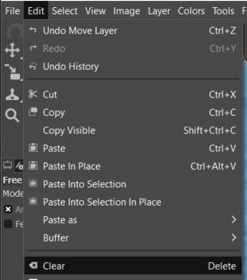
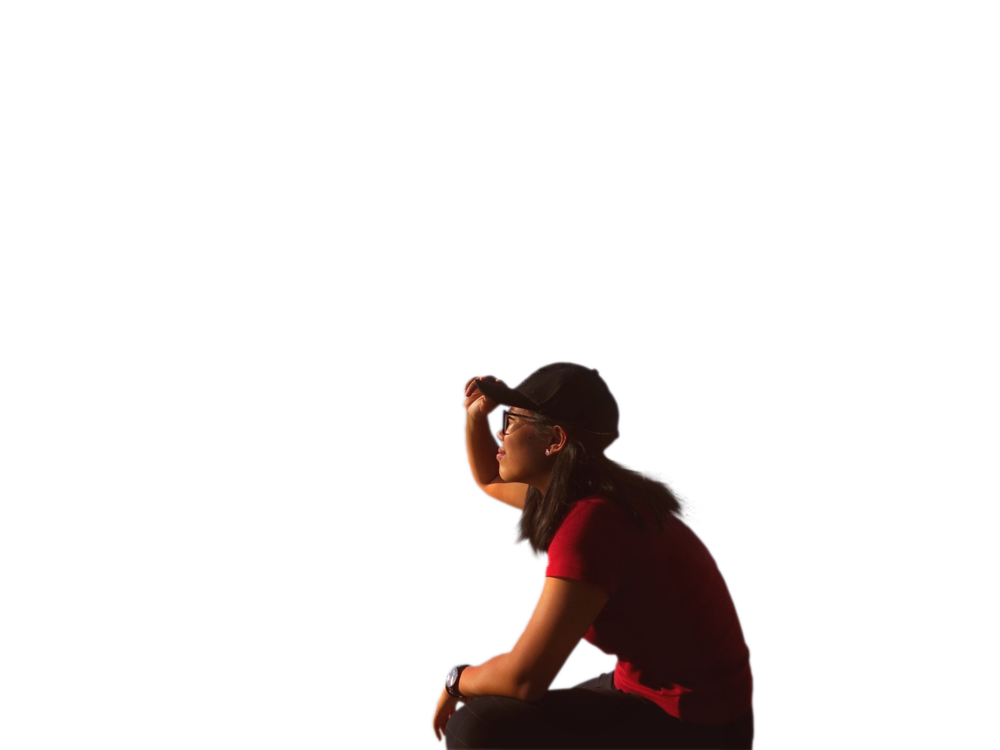

Raster Graphics
Using the software GIMP, I removed the background from picture A and replaced it with picture B.

Picture A

Picture B
To remove the background, firstly start by clicking Layer > Transparency > Add Alpha Channel.
Next, use the Free Select Tool to outline the parts you want to keep, make sure the starting node is also the last node (closed off).
Next, select Select > Invert.
Lastly, select Edit > Clear. This should make the background transparent.


To change the background, just add in the picture of choice and the finished product should be something like this.